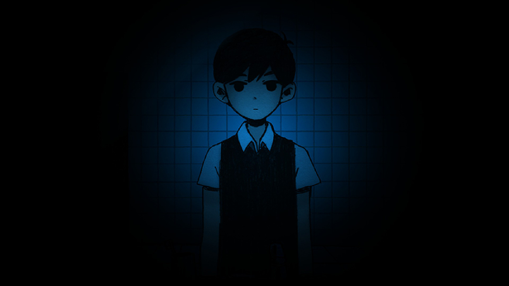

주인공 손에 칼 보이시나요
주인공 동료의 집입니다. 여기까지는 되게 잔잔하고 힐링하는 느낌이었어요.
갑자기 회상?이 나오는데 갑자기 어두워지고 오싹해집니다.
마치 우리처럼 히키였던 주인공....

귀신같은건 안 나오는데 타이드업보다 무섭고 오싹해요. 뭔가 게임하다보면 가슴이 아파옵니다... 재밌을 것 같아서 이번 주말까지는 엔딩 하나 보려고 해요. 갓겜 느낌이 납니다!!
뜬금없지만 김치찌개가 먹고싶어집니다
오싹한 게임이라서 웃으면 안되는데... 이름이 한국에서는 몰입을 방해합니다. CoolCat CoolCat CoolCat
찌개바이럴... 엔딩이 꽤 많은거같습니다??
정확한 수는 저도 잘 모르는데 멀티엔딩이라고 합니다. 교수님 말로는 주인공이 옥상에서 투신자살하는 엔딩도 있대요!
이 글을 보고 김치찌개에 눈물 흘렸습니다 ㅠㅠ
이 리뷰의 방향을 음식쪽으로 바꿔야겠습니다.
게임보다 오모리 김치찌개가 더 땡깁니다
저도 이제 헷갈리기 시작했습니다.
이거 엔딩 보면 진짜 재밌습니다. 전 시간 딸려서 유튜브 2배속으로 봤는데 엔딩에 주인공이 친구들을 - --- --- --.


후원댓글 9개
댓글 9개 ▼